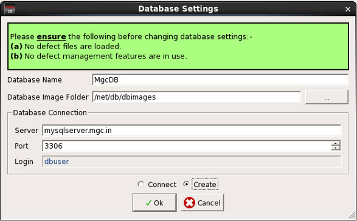

You can generate a database for Calibre
DefectReview and connect to it through the Database Settings dialog
box.
Procedure
- In Calibre
DefectReview, select Utilities > Database
Settings.
Figure 1. Database
Settings
- Select Create to
create the database. Specify the database name, database image folder path,
server, and port number.
- Click OK.
A database is created if did not exist previously. If database already
exists, the older database and images in the database image folder
are deleted and a new database with the specified database name
is created.
- To connect
to existing database, select Connect, specify
the database name, database image folder path, server, and port
number, then click OK.
You can also perform these operations using the command
line interface of Calibre DefectReview. Refer to “Calibre DefectReview Command Line Interface” for information.
Note the following:
While updating
or creating the database settings, make sure that no defect files
are loaded in the GUI.
No defect management
functionality is being used.
Changing database
settings while other functionality accesses the database can result in
undefined behavior.
While creating
a database, the Database and Database Image Directory are deleted and
recreated if they already exist. The contents of the Database Image
Directory are deleted.